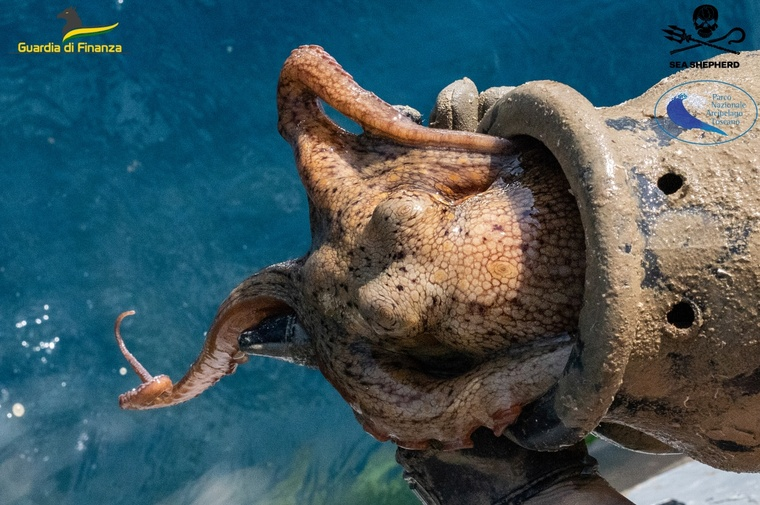
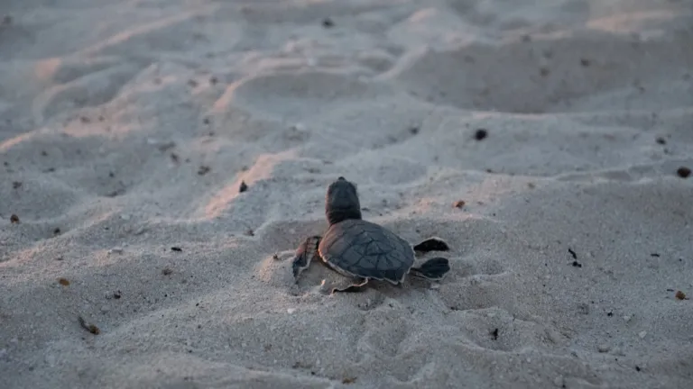
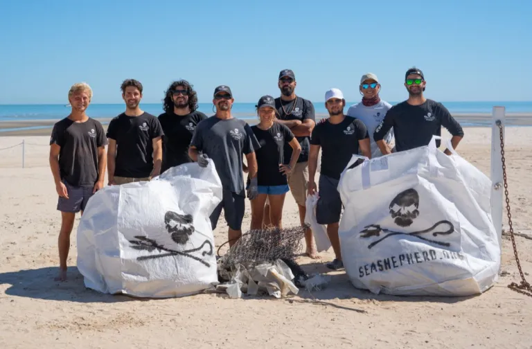
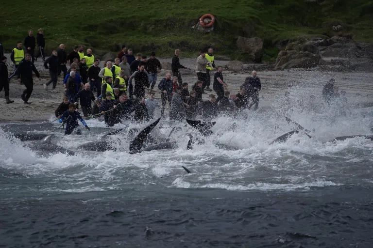

Trabajamos para proteger los océanos, su fauna y ecosistemas mediante la acción directa, la investigación y la educación.
Conocé sobre nosotrosDefendemos ballenas, tiburones, delfines y cientos de especies marinas.
Combatimos la pesca ilegal y protegemos ecosistemas marinos.
Nuestros barcos realizan campañas en distintos lugares del mundo.

BARCOS
En operación
AÑOS
Defendiendo océanos
ESPECIES
ProtegidasPERSONAS
Apoyan nuestra causaProtegemos ballenas, tiburones, tortugas, delfines y cientos de especies marinas alrededor del mundo.
Combatimos la pesca ilegal, la contaminación y la destrucción de ecosistemas marinos.
Nuestras campañas generan un impacto real mediante acciones en el mar y educación ambiental.

Las tripulaciones de Thalassa denuncian y combaten las trampas ilegales para pulpos , luchando para proteger a una de las criaturas más inteligentes del océano .
Dona ahora
En el Refugio de la Vaquita Marina, nuestro equipo trabaja las 24 horas del día, los 7 días de la semana, para erradicar la pesca ilegal de las aguas protegidas y salvaguardar al mamífero marino más amenazado del mundo .
Dona ahora
Los equipos de Thalassa liberan a los leones marinos atrapados en las redes colocadas para el comercio ilegal de totoaba, como parte de nuestra misión de desmantelar esta cadena de suministro mortal .
Dona ahora
Tu aporte económico permite financiar campañas de conservación y proteger la vida marina.
Donar ahora
Formá parte de nuestra comunidad internacional y colaborá en campañas y actividades.
Sumate
Ayudanos a que más personas conozcan la misión de Thalassa difundiendo nuestro trabajo.
Compartir